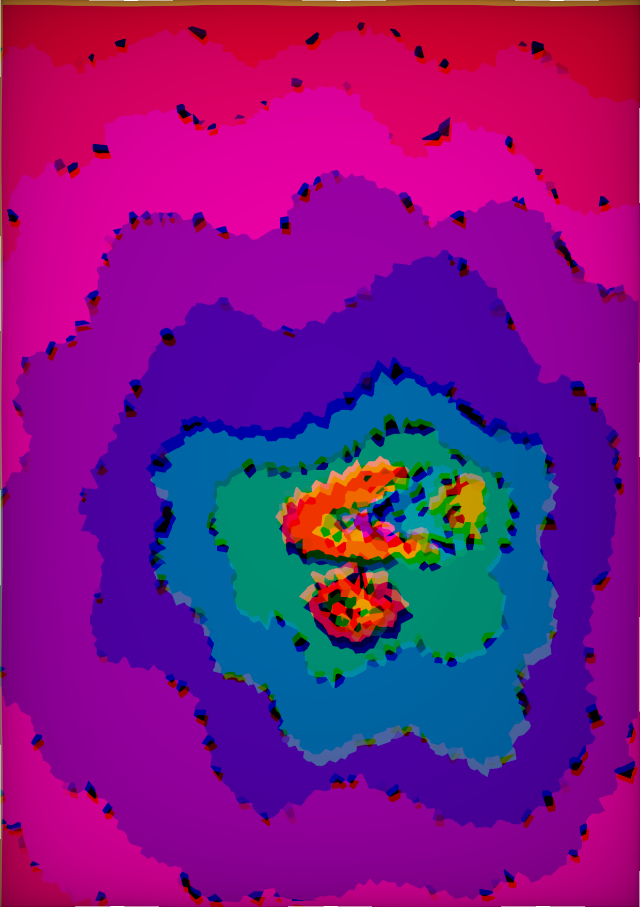

drag to stir the field · tap for a new dream

Creative Experiments · № 08
A topographic dream that never settles. A warped noise field is sliced into psychedelic contour bands; the edges glitch red and blue. Drag to stir it — tap to dream again.
drag to stir the field · tap for a new dream
